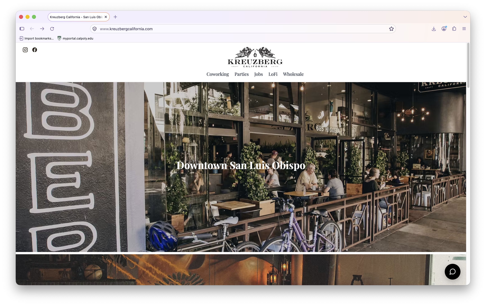
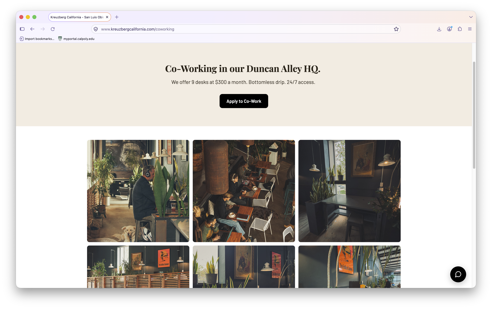
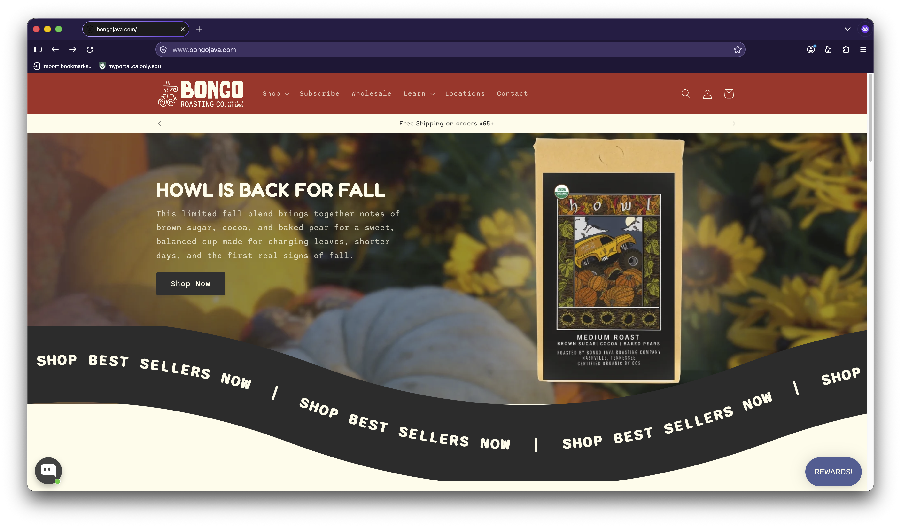
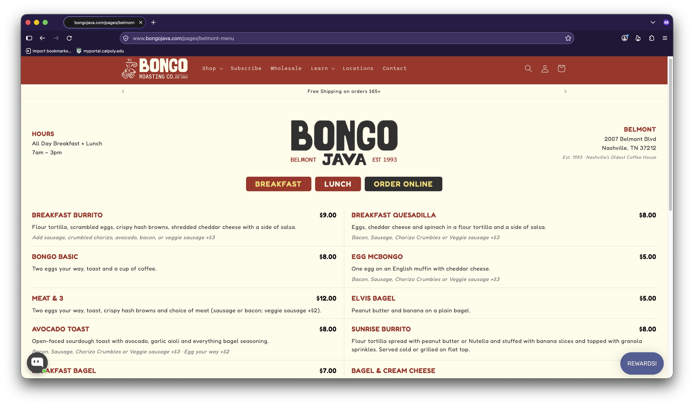
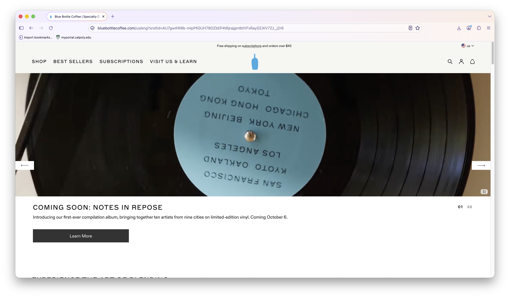
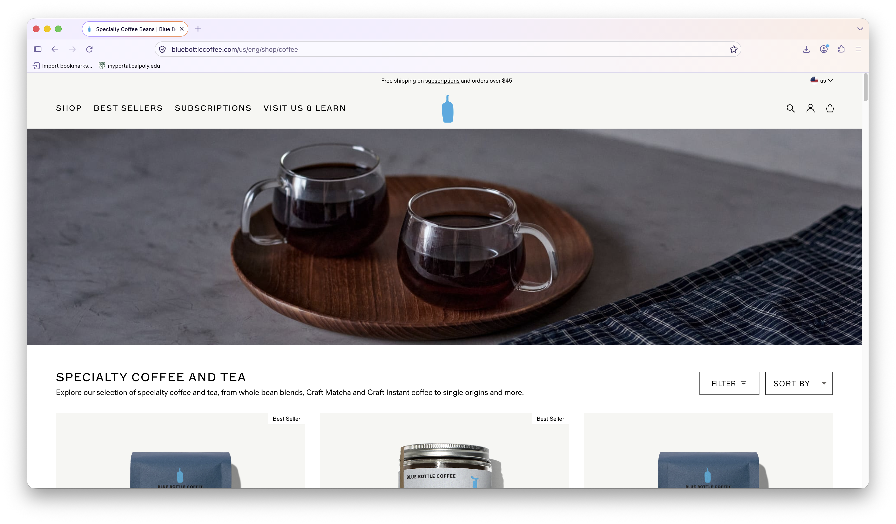
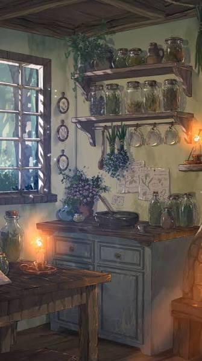
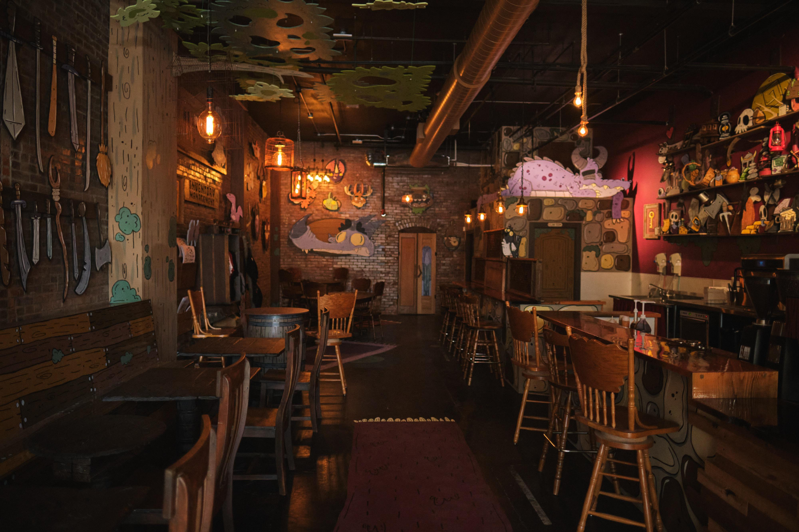
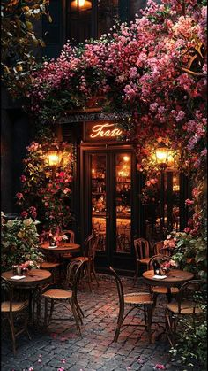

Mango & Vine's Teahouse and Bakery
This restaurant and teahouse is a place where locals and visitors can enjoy a variety of specialty teas and baked goods in a cozy and welcoming atmosphere. It's run by two sisters: Mango and Vine, who took over the family business after their uncle retired. After discovering a revolutionary new tea brewing method, they renamed the shop and expanded their menu to include a wider range of beverages and pastries; however, the same cozy front-porch style of the shop has remained intact and preserves their uncle's legacy. Now, the shop serves as a revered place for locals and visitors alike as a symbol of dedication to quality and hospitality, as well as a hub for newcomers to stop by and get to know the community.
Some context: This restaurant is located in a small village nestled between the foothills of a massive mountain range and the banks of a large lake. The village is home to a small population of people with a vibrant artistic culture and who love being outdoors. This place is also relatively rainy and cold at times, so this restaurant serves to be a refuge against the elements. Since this is a small restaurant in a secluded area, there is no wi-fi; therefore it also serves as a place to disconnect from the digital world and enjoy the company of others.
The target audience is people who are looking for a place to relax, enjoy a cup of tea, and have a pastry or two with friends or a good book. They are probably people either visiting from out of town or locals who have lived there for ages.
The audience's primary task is to find a cozy place to enjoy tea and pastries as well as connect with friends away from digital distractions.
Stylistic examples









[Hero image: teakettle and a steaming pot of tea next to it]
Welcome, friends! Here at Mango & Vine's, we specialize in artisanal teas and freshly baked goods, offering a cozy atmosphere for tea enthusiasts and food lovers alike. We hope you stay a while and make yourself at home.
[Button] Menu
[Worker preparing teas and baked goods]
[Close up of a pastry]
[Concert in the cafe]
[Steam from a teacup with a blurred view of the cafe in the background]
[Close up of art on the table]
[Close up of a vine hanging down from a wall planter]
[Small concert setting with cozy lighting]
Mango & Vine's is now open for events! A newly renovated back room is available by reservation for private and public events, such as gatherings, performances, and more.
Contact Vine via the [insert link here->] contact form for more information about booking the space. Specific reservation information available upon request.
[Close-up on a guitar]
[Cafe full of people]
[Close-up on a teapot]
Strong and robust, perfect for a stimulating morning brew.
[Teacup with Black Tea]
Calming and refreshing, ideal for a peaceful afternoon.
[Teacup with Green Tea]
Aromatic and smooth, perfect for a quiet moment.
[Teacup with Jade Cloud Tea]
Gentle and soothing, great for relaxation in the evening.
[Teacup with Chamomile Tea]
Ask one of our staff about today's special!
[Pastry of the Day]
Fine cinnamon swirled into a flaky, buttery pastry.
[Cinnamon Roll]
A delicious scone packed with juicy blueberries and a hint of vanilla.
[Blueberry Scone]
A mouthwatering scone lined with rich chocolate chips.
[Chocolate Scone]
A moist cake infused with warm spices and chunks of fresh apple.
[Spiced Apple Cake]
Freshly baked muffins in a variety of flavors, perfect for a quick snack or breakfast. Flavors rotate seasonally and are made fresh daily.
[Muffins]
Ask in-store about our daily selection of artisanal breads!
[Freshly Baked Breads]
Welcome to Mango & Vine's Teahouse and Bakery! We are two sisters who are dedicated to creating a space to enjoy slowing down, hanging out with friends, and savoring the finest teas and baked goods.
[Mango & Vine, together and smiling]
After our uncle Auben, a revered community member and teamaster, retired last year, we decided to carry on his legacy by using the same high-quality ingredients and traditional methods he used to make our products so special. Though our name is different, our commitment to quality remains the same.
[Auben, in an old looking photo, holding up a teakettle with an apron on and smiling.]
Questions? Comments? Concerns? Contact us at [email]!
Our address is 14 Main Street.
Have questions about events? Contact Vine at [email] with any questions.
[Event in the cafe with lots of people]